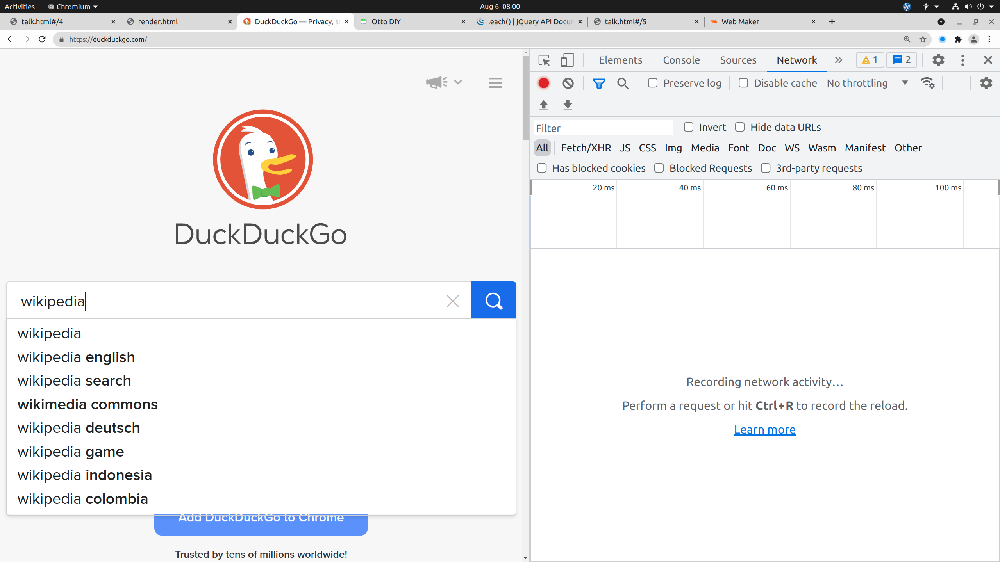

skipping: specificity can override part of a ruleskipping: view page source
skipping: request response detailsskipping: request response detailsskipping: css box modelskipping: css box modelskipping: css property hierarchyskipping: inspecting box elementsskipping: using element.style rule in style paneskipping: using element.style rule in style paneskipping: reinforce separation_of_concernsskipping: function with inputsskipping: function with inputsskipping: internet archiveskipping: videoskipping: upcoming